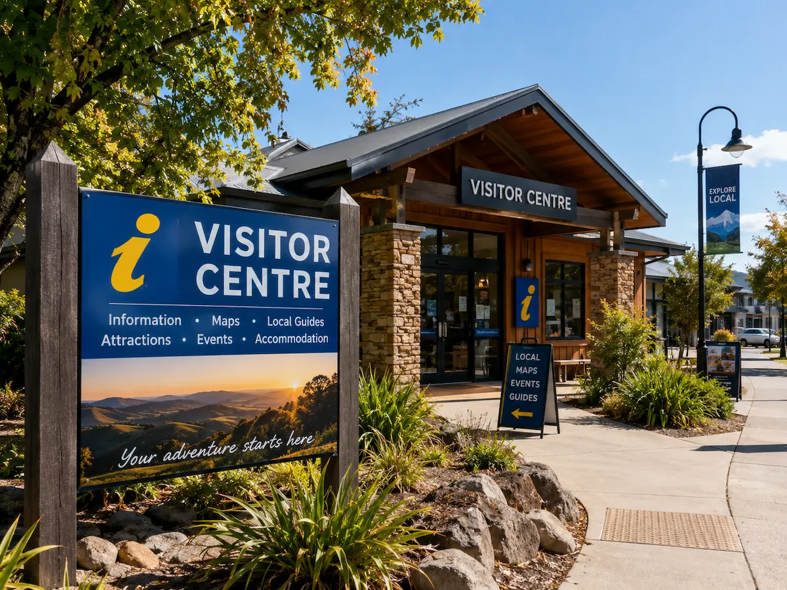
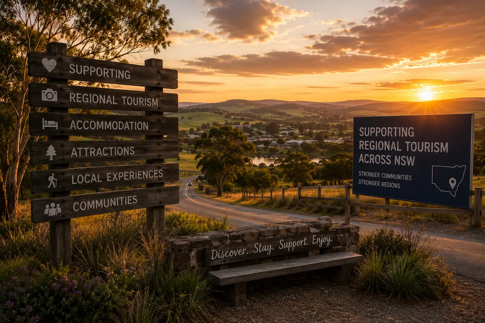
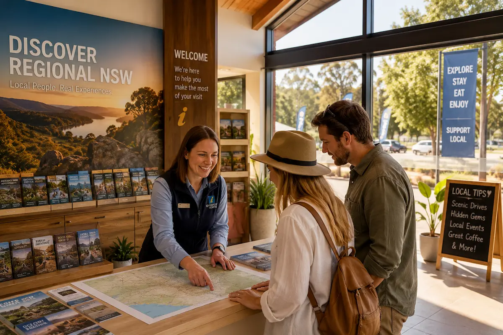

VISITOR CENTRE WEBSITE DESIGN
Modern visitor centre websites built to improve tourism discovery, Google visibility and visitor engagement across regional NSW.
Built for visitor information centres, tourism hubs and regional tourism organisations wanting stronger online visibility and tourism discovery.

TOURISM SEO
Travellers search online before visiting regional areas. A modern visitor centre website helps improve tourism discovery, Google Maps visibility and regional tourism engagement across NSW.
Help travellers discover visitor centres, attractions and regional tourism experiences through Google and tourism searches.
Designed for travellers searching attractions, maps and tourism information on phones while travelling through regional NSW.
Improve local tourism discovery through Google Maps, regional tourism searches and mobile navigation visibility.
Showcase local attractions, accommodation, museums, wineries and tourism experiences professionally online.
Fast-loading websites improve tourism usability, mobile experience and overall Google SEO performance.
FEATURES
Tourism-focused visitor centre websites designed to improve visitor engagement, tourism discovery and Google visibility across regional NSW.
SEO-focused website structure designed to improve tourism visibility and regional tourism discovery online.
Optimised for travellers searching tourism information, attractions and directions on mobile devices.
Help travellers easily find visitor centres, attractions and tourism information while exploring regional NSW.
Fast-loading websites improve tourism usability, mobile experience and overall Google SEO performance.
Modern tourism-focused layouts and regional branding designed to support local tourism growth and visitor trust.
Encourage more enquiries, local exploration and tourism engagement through a clearer online experience.
REGIONAL NSW TOURISM
Crane Platform Labs supports visitor centres, tourism organisations and tourism businesses across regional NSW — helping improve tourism visibility, Google Maps discovery and visitor engagement online.
From visitor information centres and regional attractions to tourism organisations and local destinations, we build modern tourism websites designed to support regional tourism growth and improve online discovery.
Our websites are designed to perform well on Google, work seamlessly across mobile devices and provide a clean, professional experience for travellers exploring regional NSW.


FAQ
Common questions about visitor centre websites, tourism SEO and improving tourism discovery online across regional NSW.
Visitor centres rely heavily on Google visibility, tourism searches and mobile usability to help travellers discover regional attractions, accommodation, local events and tourism experiences online.
Most travellers use Google, Google Maps and tourism searches to discover visitor centres, attractions and regional tourism information before visiting.
Google Maps helps travellers find visitor centres, opening hours, directions and nearby attractions while travelling through regional NSW.
Yes. SEO helps visitor centres improve tourism discovery, local visibility and regional tourism engagement online through Google search results.
Most tourism traffic now comes from mobile devices while travellers research destinations, attractions and tourism information on the move.
A modern tourism website improves trust, branding and visitor engagement while helping travellers find tourism information more easily online.
Slow loading speeds, poor mobile usability and outdated layouts can reduce trust and discourage visitors from exploring further.
Yes. Visitor centres play a major role in helping travellers discover local attractions, accommodation, events and regional tourism experiences.
Faster websites improve user experience, support stronger SEO performance and help travellers quickly access information while travelling.
WEBSITE PERFORMANCE
Crane Platform Labs builds fast, mobile-friendly and SEO-focused websites designed to improve Google visibility, accessibility, usability and customer trust across regional NSW.
Modern websites should not only look professional but also perform properly across Google Search, mobile devices and modern accessibility standards.
Our websites are built using clean semantic HTML, responsive layouts, lightweight code and SEO-friendly structure designed to support fast loading performance, mobile usability and long-term online visibility.
From tourism websites and local business websites to tradie and regional NSW service websites, we focus on balancing modern design with accessibility, usability, SEO and modern web best practices.
Learn why website performance, accessibility, mobile usability and SEO now play a major role in Google rankings, customer experience and long-term business growth online.
GET STARTED
Professional tourism websites built for visitor centres, tourism organisations and regional tourism businesses across NSW.
Built to improve tourism visibility, Google Maps discovery, mobile visitor experience and online engagement for regional tourism organisations and attractions.